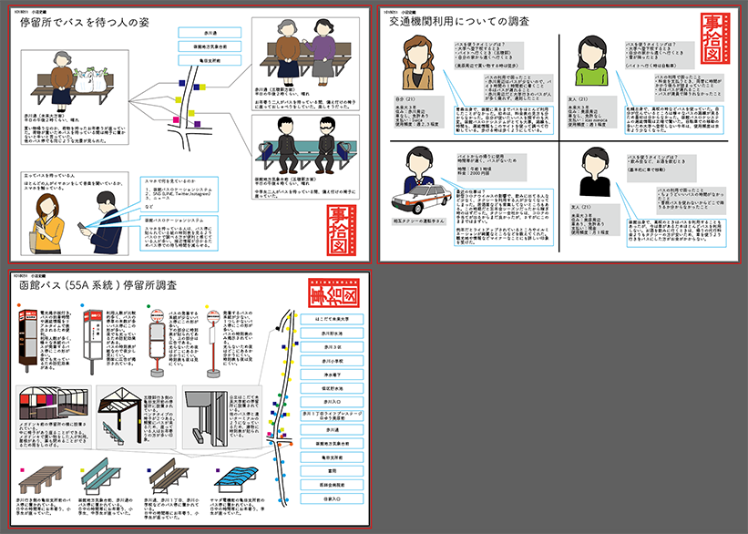
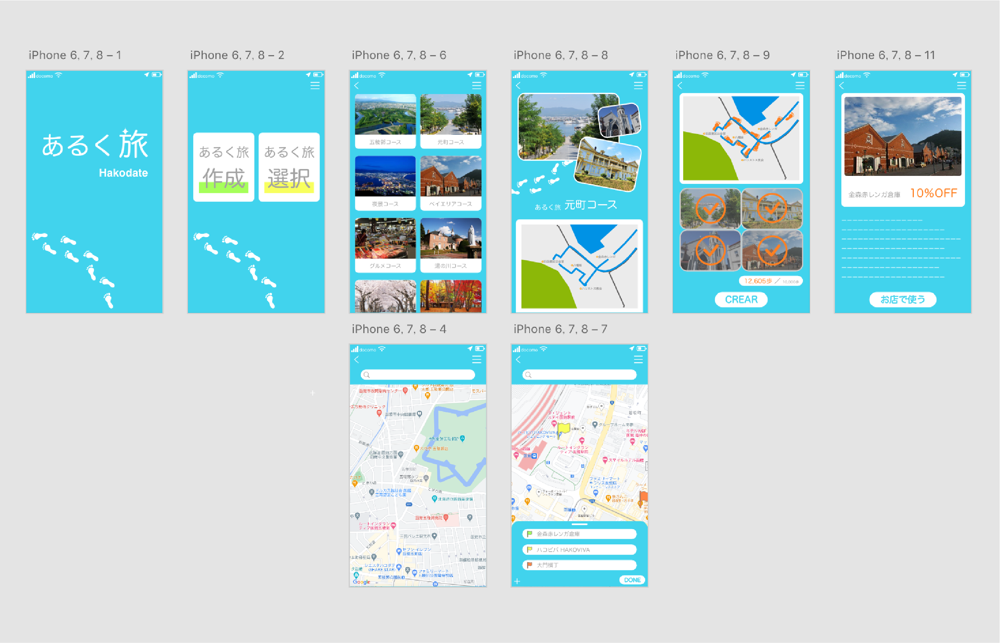

あるく旅
「循環」をテーマに、歩きながら函館の街を巡り、買い物を楽しくするスマホアプリを提案しました。
発見 × 買い物 × 楽しさ
「あるく旅」は、歩きながら函館の街を巡り、歩いた歩数に応じた割引を買い物時に受けることができるサービスです。
買い物へ向かい、買い物をするという一連の行為を楽しくすることを目的とし、ユーザの購買意欲を向上させ経済の循環の活性化を図ります。
歩くという手段を選択することで、身の回りの新たな発見、楽しさの向上に繋がります。
制作期間 ： 2020年12月（2週間）
制作人数 ： 1人
使用技術 ： Illustrator / Photoshop / Adobe XD
制作プロセス

自分調べ・他者調べ
「循環」のテーマのもとユーザの課題発見のため、自分について・他者について調べ、比較を行いました。 自分調べ・他者調べの結果、私を含め生活の中で外出することが少なく、ネットショッピングをする人が多かったです。 また外出するタイミングはバイトか買い物が多いことが分かりました。
「あるく旅」の提案
モノとお金の循環に着目し、人の生活と購買意欲を向上させるためのアプリケーションの提案を行いました。 買い物をするときに外出することから、買い物に行くまでの時間が楽しくなれば、購買意欲の向上に繋がると考えました。 その結果、地元でのモノの消費が活発化し、経済の循環に繋がります。
